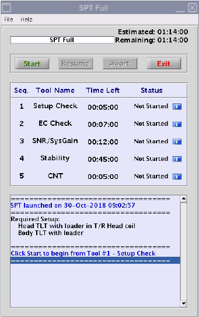

- 00000018WIA3061E010GYZ
- id_200305510.11
- Oct 13, 2022 4:48:13 AM
System Performance Test (SPT) user interface help
The system performance test (SPT) automatically executes Eddy Current Check, SNR, Stability, and Coherent Noise tests. SPT full test mode is part of ICW and planned maintenance schedules.
Overview
- Eddy Current Check: This tool measures the long term eddy current (2.5 to 2000 ms) (both B0 and linear) error for all combination of coil axes and gradient axes.
- SNR/System Gain: This tool measures the signal-to-noise ratio of a phantom. System gain is also calibrated, if it has not been completed already.
- Stability: This tool measures and shows the magnitude drift, phase offset, and echo shift using Fast Spin Echo and Gradient Resolved Echo sequences. SPT does only the body test.
- Coherent Noise Test: This tool measures the noise that could arise due to a breach in RF shield room integrity and also zipper artifact noise.
It takes approximately 2 minutes for the head phantom position check and 2 minutes for the body phantom position check. The test will not continue unless the phantom position and setup check is successful.
All SPT tools are selected; it is not possible to deselect tools from the SPT test. You can run these tools one at a time from the Image Quality tab on the CSD.
SPT menu

| Button | Description |
|---|---|
| Start | Starts the full sequence of tests from the beginning. |
| Abort | Stops the SPT test temporarily. |
| Resume | The resume option is available for only 24 hours after you aborted. See Abort and resume functions on the SPT full mode for more details. |
| Exit | Closes the SPT test interface. |
| i | The blue information buttons next to each tool open the status for the subtools (only for PASS or FAIL status). |
Test failures and errors
If you run SPT as part of ICW, you must correct errors or failures and then run full SPT again. All tests must pass in one uninterrupted test before you can continue ICW.
If a tool does not pass because of an error, you must click the Resume button on the SPT Full menu to continue to the next test. If a subtool fails, it will automatically start the next tool in the sequence.
Abort and resume functions on the SPT full mode
After SPT starts, you can stop it at any time. If you abort the test, all valid test results are assembled into a data file.
-
If you click the Abort button from the SPT Full tool, this will stop the subtool that is currently in progress. The Exit button becomes active on the subtool interface. If you select Exit, the Resume button becomes active on the SPT Full interface. If you select the Resume button, this will restart the subtool that was in progress when you aborted, and the full SPT test continues.
-
If you click the Abort button from the subtool, this will stop the subtool that is currently in progress. The Exit button becomes active on the subtool interface. If you select Exit, the Resume button becomes active on the SPT Full interface.
If you click the Resume button on the SPT Full interface, this will skip the aborted subtool and will start the next subtool, and the full SPT test continues.
When you abort from the SPT Full interface, this does not skip any tests. However, if you abort SPT during ICW, this will not be considered a full run. Thus, you must click the Start button to run the full tool again and all tests must pass in order to continue ICW.
Subtools interface
After each subtool runs, the data results show and then close automatically. You can show them again using the blue information buttons on the SPT interface.